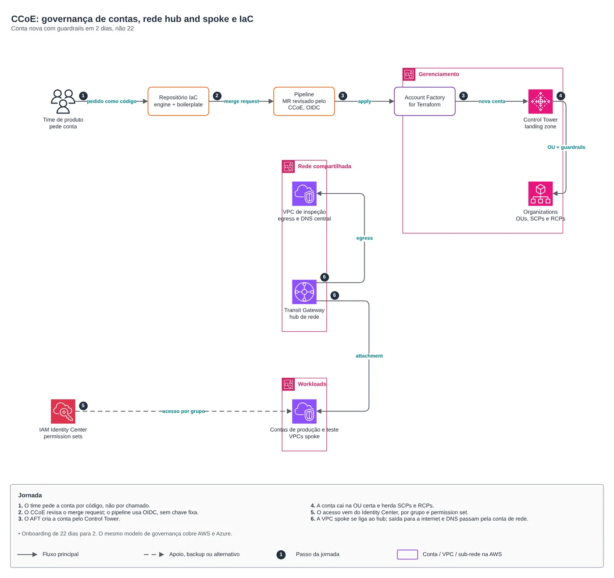
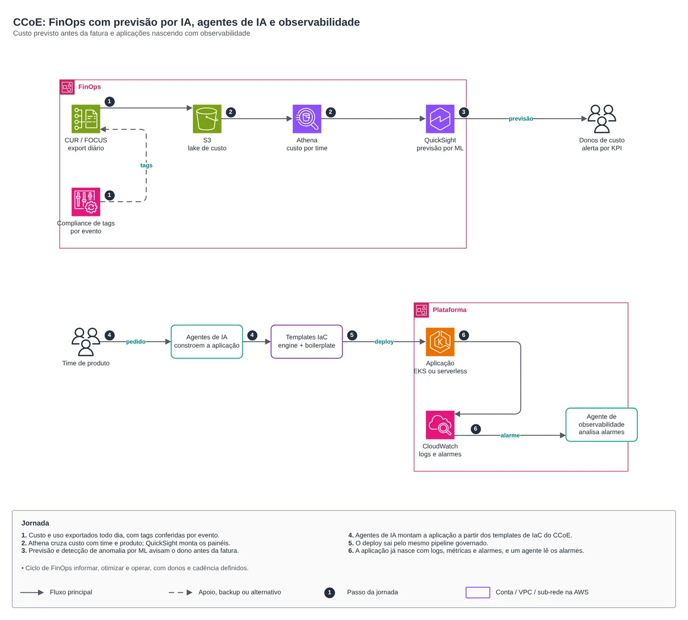

AWS · Carreira · Druid, 2025 até hoje
CCoE na AWS: governança de contas com AFT, rede hub and spoke, FinOps com IA e agentes
Desafio: contas novas levavam 22 dias, com rede ajustada à mão e pouca visibilidade de custo. Solução: governança como código, do pedido da conta até a previsão de custo e a observabilidade.


01O problema
No Cloud Center of Excellence de uma operadora de telecom, abrir uma conta AWS era um chamado: alguém criava a conta, ajustava a rede na mão e liberava acesso usuário a usuário. Levava 22 dias, cada conta ficava um pouco diferente e o custo só aparecia na fatura. Ao mesmo tempo, os times queriam publicar sozinhos, e a empresa precisava manter as regras de segurança, rede e custo em AWS e Azure.
02A solução
A governança virou código. O pedido de conta é um merge request revisado pelo CCoE; o Account Factory for Terraform cria a conta pelo Control Tower, que a coloca na OU certa com SCPs e RCPs. O acesso vem do IAM Identity Center por grupo, e a VPC da conta se liga ao hub de rede por Transit Gateway, com saída e DNS centralizados. Do lado de custo, o export CUR/FOCUS alimenta um lake no S3, o Athena cruza custo com time e o QuickSight faz previsão e detecção de anomalia por ML. Para aplicações, agentes de IA montam a aplicação a partir dos templates de IaC do CCoE, e tudo já sai com logs, métricas, alarmes e um agente que lê os alarmes.
CCoE: governança de contas, rede hub and spoke e IaC
- O time pede a conta por código, não por chamado.
- O CCoE revisa o merge request; o pipeline usa OIDC, sem chave fixa.
- O AFT cria a conta pelo Control Tower.
- A conta cai na OU certa e herda SCPs e RCPs.
- O acesso vem do Identity Center, por grupo e permission set.
- A VPC spoke se liga ao hub; saída para a internet e DNS passam pela conta de rede.
CCoE: FinOps com previsão por IA, agentes de IA e observabilidade
- Custo e uso exportados todo dia, com tags conferidas por evento.
- Athena cruza custo com time e produto; QuickSight monta os painéis.
- Previsão e detecção de anomalia por ML avisam o dono antes da fatura.
- Agentes de IA montam a aplicação a partir dos templates de IaC do CCoE.
- O deploy sai pelo mesmo pipeline governado.
- A aplicação já nasce com logs, métricas e alarmes, e um agente lê os alarmes.

03Discussão
Módulos Terraform usados:
aws/control-tower-aftControl Tower: Account Factory for Terraform (AFT)aws/control-tower-landing-zoneControl Tower: landing zone 4.0aws/organizations-scpOrganizations: OUs, SCPs, RCPs e Tag Policyaws/identity-center-permission-setIAM Identity Center: permission sets e atribuiçõesaws/network-hubConta Network hub-and-spokeaws/transit-gateway-attachmentAttachment de VPC ao Transit Gatewayaws/iam-github-oidcGitHub Actions -> AWS por OIDCaws/cur-focus-exportExportação de custos FOCUS 1.0aws/tag-complianceConformidade de tags por eventoaws/finops-cost-reportRelatório diário de custosaws/cloudwatch-logsLog group de aplicação + IRSA do coletor